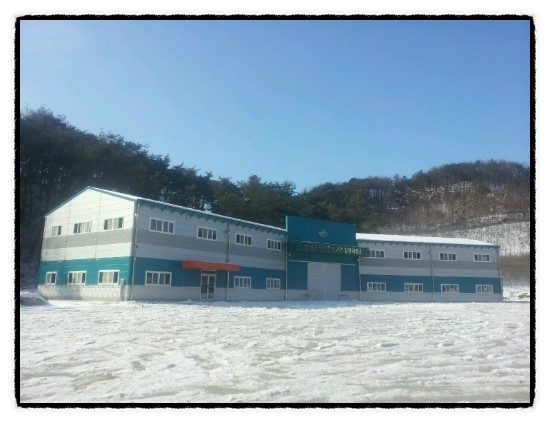
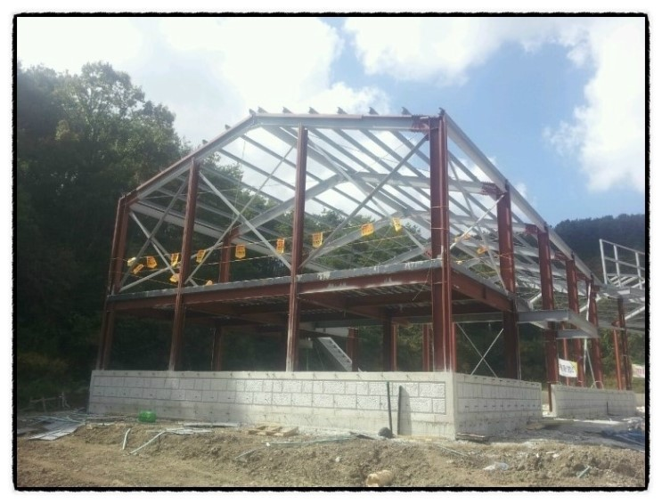

안녕하세요~ ^^ '판넬매니아!' 입니다.~
조립식판넬 시공의 모든 것을 한 눈에 알 수 있는 '판넬시공이야기' 두번째 이야기를 시작합니다~~ 짜~짠 !!

<1>
'농기계 보관창고 신축공사'~ 두둥~~ 기대하셨던 '창고시공' 이야기입니다~
공사의 시작은 토공사죠 ^^
이번 창고 신축 토공사에서는 기존 대지의 지형을 이용,
토사반출 제로를 목표로 터파기를 실시했습니다.
터 파기후 잡석다짐을 200mm로 토공사를 깔끔하게 마무리 하였죠.
토공사를 깔끔하게 완료하고~ 이제 철근콘크리트공사 시~작 !
<2>
농기계보관창고라는 건물용도를 고려하여
바닥철근을 상하부 복배근으로 하여
구조적으로 안정적인 시공을 진행하였습니다.
<3>
철골을 세운후 창고에 어울리는 깔끔한 컬러로
철구조물 도장이 진행되었습니다.

<4>
철골작업을 마친후에 안전시공을 위해
철골하부에 낙하물 방지망까지 설치하여
꼼꼼히 안전에 대비하였어요~ ^^
<5>
와우~ 드디어~드디어~ 기다리던 판넬시공입니다 ^^
대광판넬에서 생산된 따끈따끈한 판넬이 현장에 도착하고
짠~~! 판넬시공이 시작되었습니다.
판넬이 시공되니 ^^
드디어 건물의 때깔이 사는군요 ㅎㅎㅎ
금번 창고시공을 위해 판넬외부색상을 5개 이상 도안했고
그 결과 주출입구 부분에 컬러 포인트를 주고
상, 하부 띠장으로 건물외형이 시각적으로 단조롭지 않게 하여
심미적으로도 훌륭한 창고가 완성될 수 있었습니다~
어때세요? 창고라도 외형에 신경을 쓰니
보기에 넘 좋지 않나요? ^^
<6>
마지막으로 건물 내부는 콘크리트 타설시 휘니샤 마감후
에폭시 하도 및 중도로 마무리 하여

건물사용중 일어날 수 있는 먼지발생을 막고
에폭시 상도는 시공하지 않아 비용절감효과까지 볼수 있었습니다~ !
드디어 멋진 판넬창고 시공이 끝났네요~
oh~~! 멋있죠? ^^
-
공사기간 : 2014년7월~2014년 11월
-
시공 총괄 : ㈜재도종합건설 (전북 완주군 봉동읍 완주산단6로101-6, 063-263-6151)
-
판넬 공사 : 태성건설 (전주시 덕진구 금상동 239-1, 박성민사장 010-9124-7907)
-
판 넬 : (주)대광판넬 (광주광역시 서구 유덕로 91, 062-352-2240~6